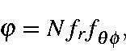
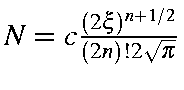
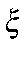
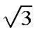
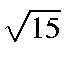
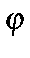
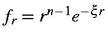

Next: Electron density
Up: Theory
Previous: Starting M.O.s
In order to calculate electron density for any given point, the value of
each atomic orbital must be calculated. Atomic orbitals, as Slaters, are
of form

in which
,
where 
is the orbital
exponent, n is the principal quantum number, and c=1 for s orbitals,

for p orbitals, and 
for d orbitals.
At any given point, the value of 
is given as the product of the
normalization constant, the radial term, and the angular component. The
radial term is simply
,
where r is the distance
from the point under study to the atomic center.
The angular terms are more complicated. For a s-p-d basis set, the
value of  is
is
|
fs |
= |
Nfr |
|
fpx |
= |
Nfrx |
|
fpy |
= |
Nfry |
|
fpz |
= |
Nfrz |
|
fd(x2-y2) |
= |
Nfr(1/2)(x2-y2) |
|
fd(xz) |
= |
Nfrxz |
|
fd(z2) |
= |
Nfr(1/12)1/2(2z2-x2-y2) |
|
fd(yz) |
= |
Nfryz |
|
fd(xy) |
= |
Nfrxy |
where x, y, and z are the normalized direction components.
Next: Electron density
Up: Theory
Previous: Starting M.O.s
J. J. P. Stewart
Fujitsu Ltd. 2001